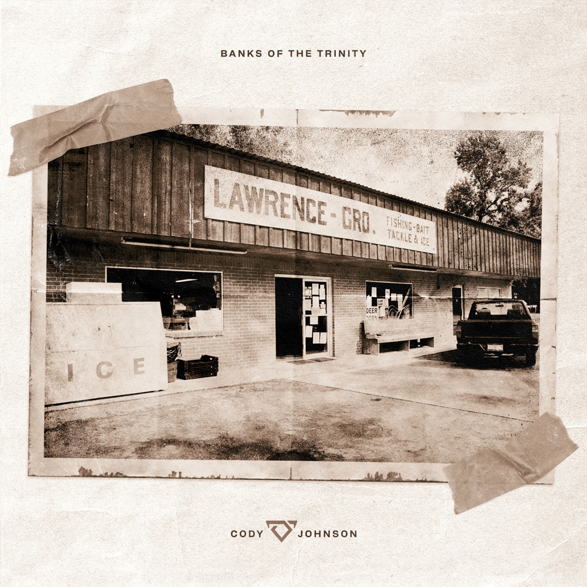

by Bebe Rexha
Cody Johnson is the most classical country artist that I can think of while enjoying the music. He dabbles in mixing country with rock and some hard-hitting bass drums, which makes for what feels like a soundtrack straight off the ranch. One thing I noticed in this album compared to other songs of his that I like is how focused it is on being for cowboys rather than good, loving men. Past songs like Diamond In My Pocket and Work Boots are all about being nervous to talk to a woman, whereas Horseback and Fool Proof are songs about losing a woman. They are great songs that I've been loving, I am just not totally on board with the shift in subject. I also don't know how I feel about the simpler and softer songs like Take Me Back (Leave Me There) as I don't know if it totally fits his voice. My personal favorites off this album were Horseback, Shoot The Bull, and Fool Proof. Album was reviewed on July 7th, 2026.